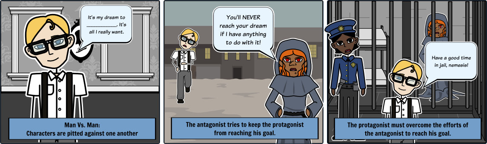
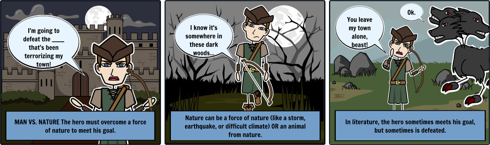
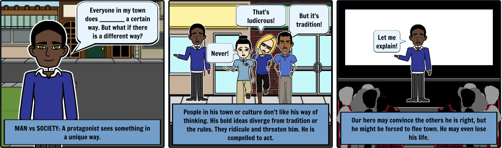

Escrita para animação
Mais do que um tratado sobre a escrita de narrativas para animação (é um tópico que preenche diversos livros!), pretende-se aqui partilhar algumas notas e informações para auxiliar quem inicia uma tarefa deste tipo.
Algumas sugestões e recomendações
- 1. A estória tem de ser importante para o autor! E importante não significa longa ou complexa. Pense na riqueza de alguns ditados populares.
- 2. O que pretende dizer, provocar? Deve saber bem o que pretende. Resuma a estória numa frase.
- 3. Como acaba? Comece pelo final.
- 4. Muitas anedotas e ditados constituem bons pontos de partida.
Anatomia da Narrativa
Existe bastante literatura sobre este tema. O esquema abaixo apresenta os elementos básicos de uma narrativa (enredo, personagem, tempo e espaço) sintetizando diversas fontes e influências.
Enredo
O enredo é o conjunto de acontecimentos ou blocos ligados entre si que fundamentam a ação de uma narrativa. A sequência de acontecimento pode ser linear ou não-linear.
Situação inicial
Onde se faz a apresentação das personagens, tempo e espaço da narrativa.
Quebra de situação
Um acontecimento que modifica a situação apresentada, introduz um desequilíbrio.
Conflito
É a situação que tem de ser resolvida, a quebra a estabilidade ou equilíbrio apresentado na situação inicial.
Conflito interno / Man against self
O conflito ou luta são internos, estão dentro da própria personagem e esta luta consigo mesma. A personagem tem de superar a sua própria natureza (seu corpo, sua mente ou seus sentimentos) porque é esta que constitui o obstáculo entre a personagem e os seus objetivos ou desejos: desportista com físico fraco que quer ir ao Jogos Olímpicos, trabalhador incompetente que quer manter o seu trabalho, apaixonado tímido que quer declarar o seu amor, etc. O conflito interno mais básico é o de origem física: personagem não tem força ou capacidade para executar algo.

Imagem publicada em man-vs--self.
Conflito pessoal / Man against man
É um conflito externo. A estória envolve luta (não tem de ser física!) entre personagens, o obstáculo ou dificuldade entre a personagem e o seu objetivo é outra pessoa. O conflito pode resultar de uma oposição direta (antagonista ou adversário tem intenção de dificultar o caminho da personagem) ou ser mais subtil: relação difícil entre filho e pai, o polícia que persegue o ladrão, etc. O conflito pessoal mais básico é o do herói (bom da fita, o bem) contra o vilão (mau da fita, o mal).
Imagem publicada em man-vs--society.
Conflito extra-pessoal
O obstáculo é externo e não é uma pessoa.
Homem vs. Natureza
Personagem luta contra uma força animal ou da natureza (neve, tempestade, força sobrenatural, baleia, etc.).
Imagem publicada em man-vs--nature.
Homem vs. Sociedade
Personagem luta contra uma instituição criada pelo homem (uma organização, um governo, normas sociais, etc.). Nestes conflitos, é comum a personagem ter de fazer escolhas morais ou lutar contra normas sociais que impedem a satisfação dos seus objetivos.
Imagem publicada em man-vs--society.
Clímax
É o momento maior na narrativa, o momento de viragem, quando o protagonista faz a escolha que define o resultado final. Quando o protagonista faz a "má" escolha que vai resultar na tragédia final.
Desfecho
A solução do conflito (nem sempre feliz...).
Personagem
Round vs. flat (redondas vs. planas)
Personagens round (redondas) são complexas, ricas, densas, com muitas caraterísticas. Personagens flat (planas) são simples, pouco complexas.
Dinâmicas vs. estáticas
As dinâmicas evoluem/modificam-se durante a narrativa (maus que passam a bons, etc.). As estáticas permanecem iguais durante a narrativa.
Tempo
Espaço
Estórias em estilo Pixar
Em 2011, Emma Coats, antiga artista de storyboard da Pixar, publicou na sua conta Twitter 22 regras para criar e contar estórias com estilo Pixar.
Nas linhas abaixo encontrará a lista original acompanhada de tradução e comentários nossos.
- #1: You admire a character for trying more than for their successes.
- # 1: Admire uma personagem por tentar mais do que os seus sucessos.
- #2: You gotta keep in mind what’s interesting to you as an audience, not what’s fun to do as a writer. They can be v. different.
- # 2: Tem que ter em mente o que é interessante para si enquanto audiência, não o que é divertido fazer enquanto escritor. Estes aspetos podem ser muito diferentes.
- #3: Trying for theme is important, but you won’t see what the story is actually about til you’re at the end of it. Now rewrite.
- # 3: Tentar escrever sobre um tema é importante mas não vai ver sobre o que é a história até estar no final. Agora vá reescrever.
- #4: Once upon a time there was ___. Every day, ___. One day ___. Because of that, ___. Because of that, ___. Until finally ___.
- # 4: Era uma vez ___. Todos os dias, ___. Um dia ___. Por causa disso, ___. Por causa disso, ___. Até que finalmente ___.
- #5: Simplify. Focus. Combine characters. Hop over detours. You’ll feel like you’re losing valuable stuff but it sets you free.
- # 5: Simplifique. Foco. Combine personagens. Salte os desvios. Irá sentir que está a perder coisas valiosas mas liberta-o.
- #6: What is your character good at, comfortable with? Throw the polar opposite at them. Challenge them. How do they deal?
- # 6: No que é que a sua personagem é boa, se sente confortável? Atire o oposto contra elas. Desafie as personagens. Como lidam com isso?
- #7: Come up with your ending before you figure out your middle. Seriously. Endings are hard, get yours working up front.
- # 7: Resolva o final antes de descobrir o meio. A sério. Os finais das estórias são difíceis, faça com que o seu funcione desde o início do processo da escrita.
- #8: Finish your story, let go even if it’s not perfect. In an ideal world you have both, but move on. Do better next time.
- # 8: Termine a estória, deixe-a ir mesmo que não seja perfeita. Num mundo ideal conseguiria ambas as coisas mas tem de seguir em frente. Faça melhor da próxima vez.
- #9: When you’re stuck, make a list of what WOULDN’T happen next. Lots of times the material to get you unstuck will show up.
- # 9: Quando estiver bloqueado, faça uma lista do que não iria/irá acontecer em seguida. A solução para desbloquear irá surgir muitas vezes.
- #10: Pull apart the stories you like. What you like in them is a part of you; you’ve got to recognize it before you can use it.
- # 10: Separe as estórias de que gosta. O que gosta nelas é uma parte de si; tem que reconhecer o que é antes de poder utilizar.
- #11: Putting it on paper lets you start fixing it. If it stays in your head, a perfect idea, you’ll never share it with anyone.
- # 11: Colocar em papel permite que comece a corrigir. Se permanecer na sua cabeça, a ideia perfeita, nunca irá partilhá-la com alguém.
- #12: Discount the 1st thing that comes to mind. And the 2nd, 3rd, 4th, 5th – get the obvious out of the way. Surprise yourself.
- # 12: Deixe cair a 1ª coisa que vem à mente. E a 2ª, 3ª, 4ª, 5ª - tire o óbvio do caminho. Surpreenda-se.
- #13: Give your characters opinions. Passive/malleable might seem likable to you as you write, but it’s poison to the audience.
- # 13: Dê opiniões às suas personagens. Passivo/maleável pode parecer simpático para si à medida que escreve mas é veneno para o público.
- #14: Why must you tell THIS story? What’s the belief burning within you that your story feeds off of? That’s the heart of it.
- # 14: Porque tem de contar esta estória? Qual é a crença que queima dentro de si que alimenta a estória? É esse o coração da estória.
- #15: If you were your character, in this situation, how would you feel? Honesty lends credibility to unbelievable situations.
- # 15: Se fosse a sua personagem, nesta situação, como se sentiria? Honestidade dá credibilidade a situações inacreditáveis.
- #16: What are the stakes? Give us reason to root for the character. What happens if they don’t succeed? Stack the odds against.
- # 16: O que está em causa? Dê-nos a razão para torcer pela personagem. O que acontece se elas não conseguirem? Empilhe as probabilidades contra.
- #17: No work is ever wasted. If it’s not working, let go and move on - it’ll come back around to be useful later.
- # 17: Nenhum trabalho é desperdiçado. Se não funciona, deixe e siga em frente - irá voltar a ser útil mais tarde.
- #18: You have to know yourself: the difference between doing your best & fussing. Story is testing, not refining.
- # 18: Tem que conhecer-se a si mesmo: a diferença entre fazer o seu melhor e espalhafato/exagero. Estória é testar, não refinar.
- #19: Coincidences to get characters into trouble are great; coincidences to get them out of it are cheating.
- # 19: Coincidências para colocar personagens em apuros são óptimas; coincidências para tirá-las de sarilhos é fazer batota.
- #20: Exercise: take the building blocks of a movie you dislike. How d’you rearrange them into what you DO like?
- # 20: Faça o exercício: separe os blocos de um filme de que não gosta. Como é que reorganizava os blocos para criar algo de que gostasse?
- #21: You gotta identify with your situation/characters, can’t just write ‘cool’. What would make YOU act that way?
- # 21: Tem que se identificar com a sua situação/personagens, não pode apenas escrever 'fixe'. O que faria com que você agisse dessa forma?
- #22: What’s the essence of your story? Most economical telling of it? If you know that, you can build out from there.
- # 22: Qual é a essência da sua estória? Qual é versão mais curta/sintetizada? Se sabe isso, pode construir a partir daí.